UT 3 AWS Academy

Preliminares
Descargar una distribución de Linux ligera (Lubuntu, Mint) e instalarla sobre una máquina virtual.
Learner Lab
Invitación a Learner Lab
En vuestros correos corporativos habréis recibido un mensaje de AWS Academy.
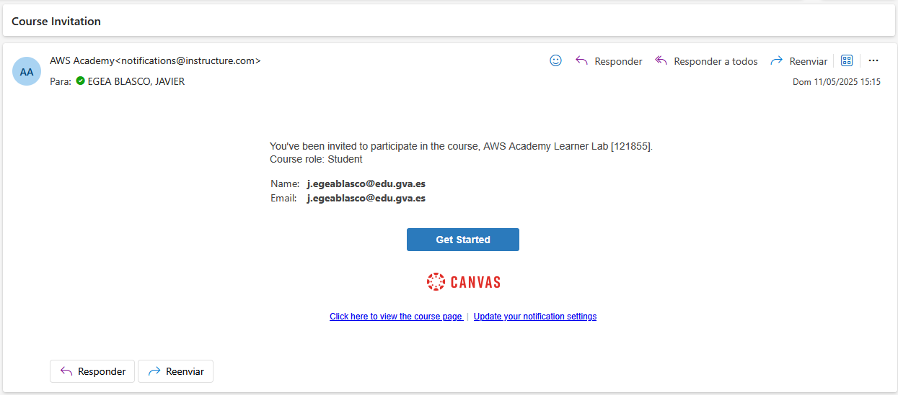
Si habéis recibido ese correo, significa que se os ha dado de alta en un laboratorio (Leaner Lab) donde haremos la formación del curso.
Este laboratorio cuenta con un presupuesto de 50$. Como lo veremos a lo largo del curso, convendrá administrarlo correctamente.
Si se excede el límite de 50$, el acceso quedará bloqueado y no será posible recuperar los trabajos realizados en él.
Registro en AWS Academy
- Hacer click en Comenzar y registraros en el servicio que se indica.
-
Luego os saldrá una ventana que os pedirá de acceder a vuestra cuenta de Canvas.
Si no tenéis cuenta de Canvas, pinchar en Create my account.
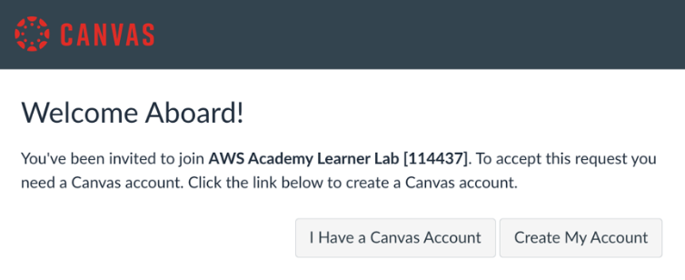 -
Un vez registrados, podréis acceder a vuestra cuenta de AWS Academy.
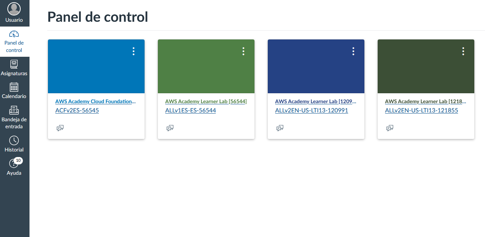
Acceso al curso
Pinchar en el curso. Si es la primera vez que usáis el Learner Lab sólo os aparecerá un curso.
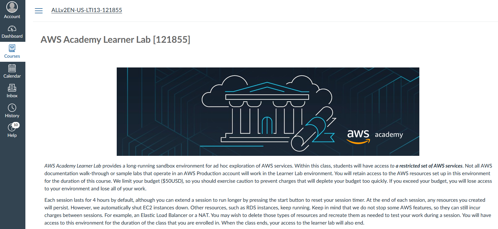
Acceder al laboratorio
-
Seguir el enlace Launch AWS Acedemy Leaner Lab.
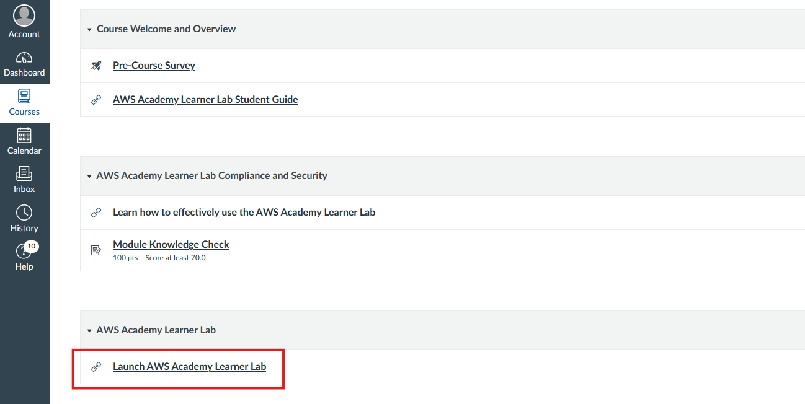
-
El siguiente paso será lanzar el laboratorio de AWS.
Previamente tendremos que conceder permisos y decir que nos hemos leído los términos de uso.
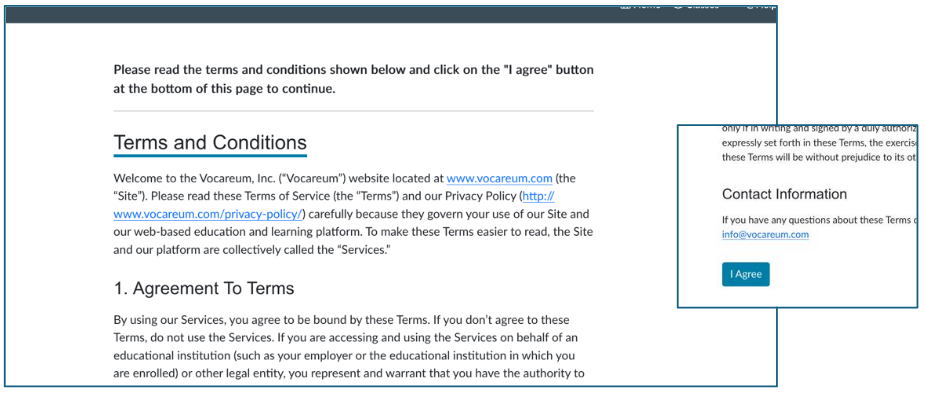 -
Una vez aceptados los términos y condiciones, esperar a que aparezca el spinner de vocareum
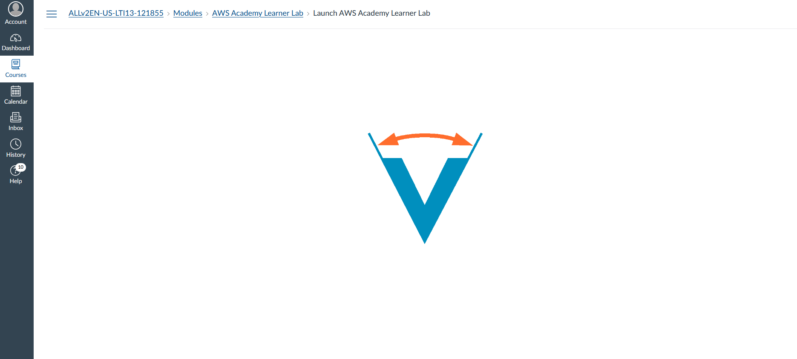
-
Si todo ha ido bien, accederemos al Learner Lab.
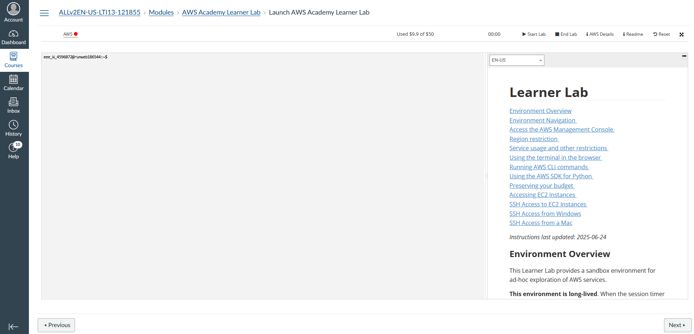
Lanzar el laboratorio
Para poder acceder a la consola de AWS y poder empezar a usar sus servicios pulsaremos Start Lab.
Una vez iniciado, dispondremos de una sesión de 4 horas de duración para hacer las prácticas. Si vemos que nos vamos a quedar cortos de tiempo, siempre podremos pulsar de nuevo Start Lab antes de que finalicen las 4 horas.
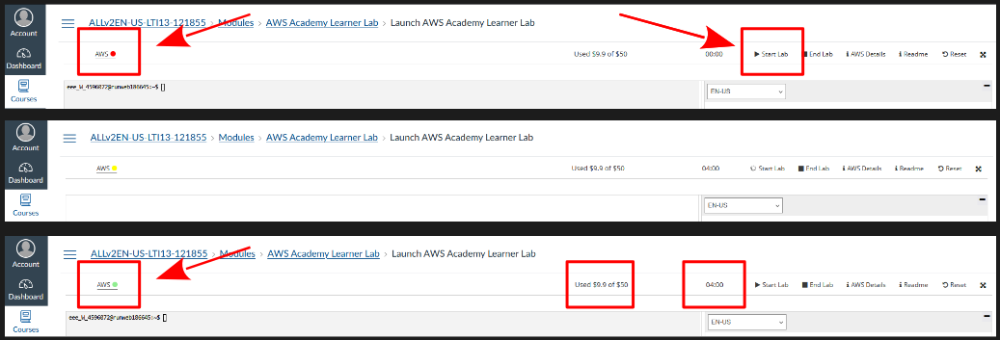
Consecuencias de apurar el tiempo del learner lab:
1. Se cierra la sesión al llegar al tiempo máximo autorizado.
2. Todas los servicios se paran, es decir, dejamos de pagar por utilizarlos.
3. Seguimos pagando por tener creados esos servicios. Por lo cual, durante las prácticas, siempre se deberá eliminar los servicios que ya no utilizaremos.
Panel de AWS
Una vez que el enlace de AWS haya pasado a color verde, hacemos clic en él y accederemos al panel de control de AWS.
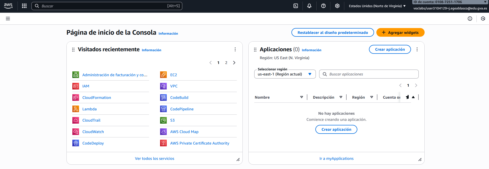
Ejercicio 1
Localizar vuestras credenciales de usuario.
Ejercicio 2
¿En qué región nos encontramos nada más acceder con nuestra cuenta de alumno a AWS?
¿Podemos acceder a otras regiones como, por ejemplo, España (Madrid)?
¿Podemos ver las zonas de disponibilidad dentro de la región que tenemos asignada?
Tarea 1 - Creación de una alerta de costes
Ir a Administración de facturación y costos y crear una alerta de costos con las siguientes condiciones.
- Umbral de coste alcanzado: 5$.
- Frecuencia de las altertas: Resúmenes semanales.
Instalar el cliente de AWS CLI
AWS CLI es el cliente de AWS mediante el cual podremos utilizar la terminal para poder trabajar con nuestro entorno. En el siguiente enlace encontraréis las instrucciones de instalación del CLI de AWS.
Una vez finalizada la instalación podremos comprobar la versión instalada con el comando:
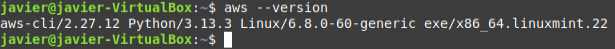Introducir las credenciales del laboratorio en el cliente de AWS
Tenemos el laboratorio en marcha y el cliente de AWS instalado. Para poder conectarnos desde nuestra máquina a nuestro cliente de AWS (y sobre todo a los servivios que crearemos en él) necesitaremos autenticarnos. Para ello utilizaremos las credenciales del laboratorio para configurar nuestro cliente.
-
Credenciales del laboratorio en el apartado AWS Details.
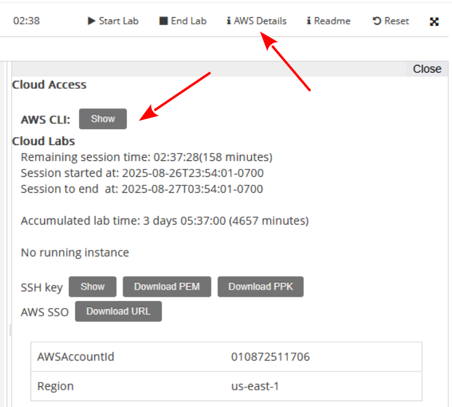
-
Credenciales de AWS CLI
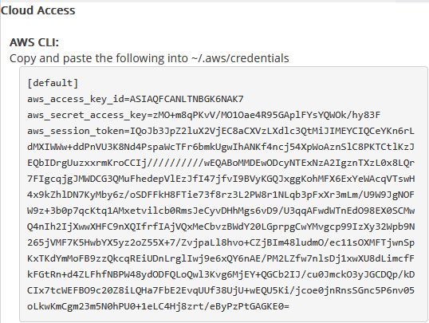
-
Para cargar las credenciales del laboratorio en nuestra máquina usaremos aws configure y pondremos los datos que nos irá pidiendo.
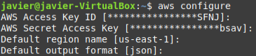
-
Para finalizar y poder conectarse desde nuestro cliente, haremos lo siguiente:
-
Accedemos a la carpeta .aws (creada con aws configure) de nuestra máquina y editamos el archivo credentials.
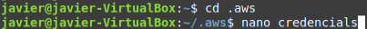
-
A continuación borramos todo el contenido y copiamos toda la información de AWS Details.
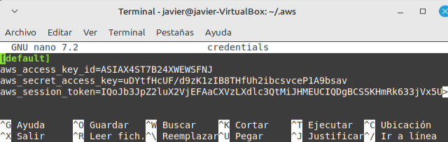
-
-
Si todo ha ido bien, al ejecutar el comando aws sts get-caller-identity nos devolverá:
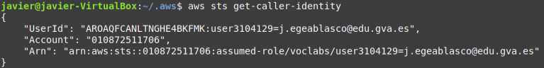
Nota:
Habrá que repetir este proceso cada vez que cambie el token de sesión y necesitemos usar comandos de CLI desde nuestra máquina para trabajar sobre nuestra nube de AWS. No suele ser habitual, pero en caso de hacer un reset del laboratorio (borrado total de todo el entorno creado) es posible que haya que repetir el proceso.
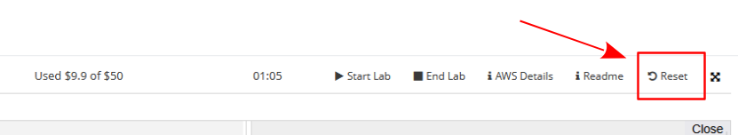
Cerrar el Learner Lab
Para cerrar el Learner Lab basta con pulsar el botón de End Lab.
Todos los servicios que tengamos se detendrán pero seguirán existiendo y AWS nos facturará por tenerlos.
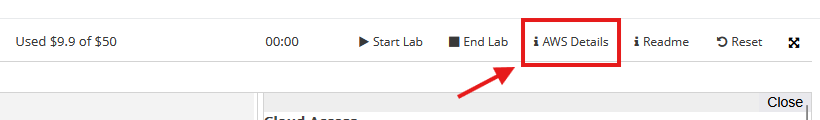
Enlaces de interés
Documentación de AWS.